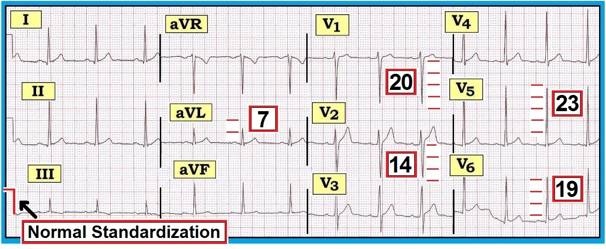
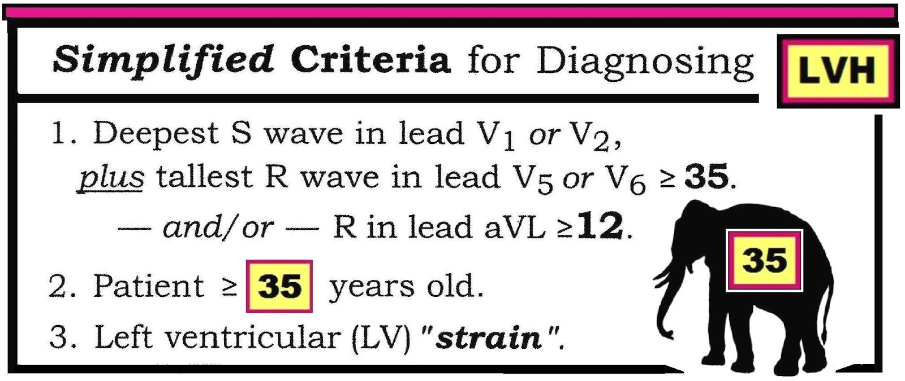
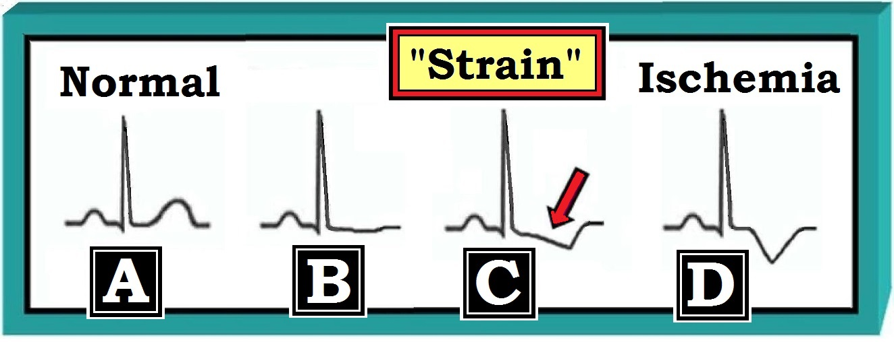
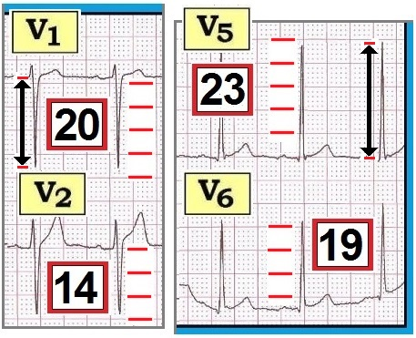
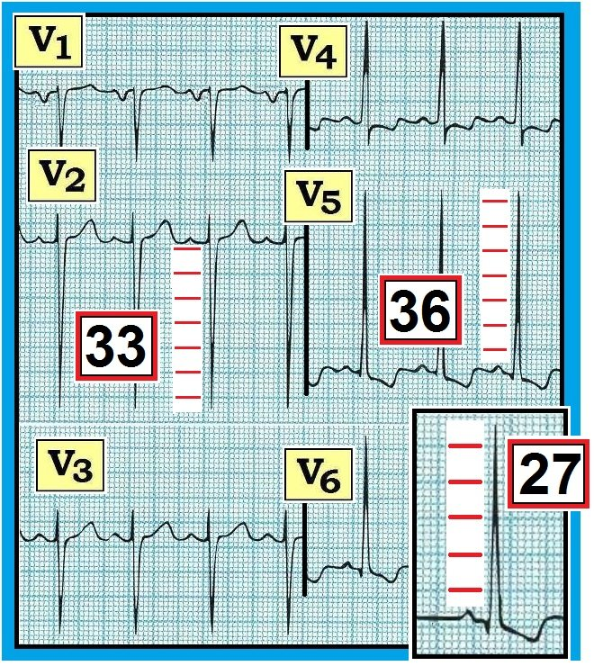
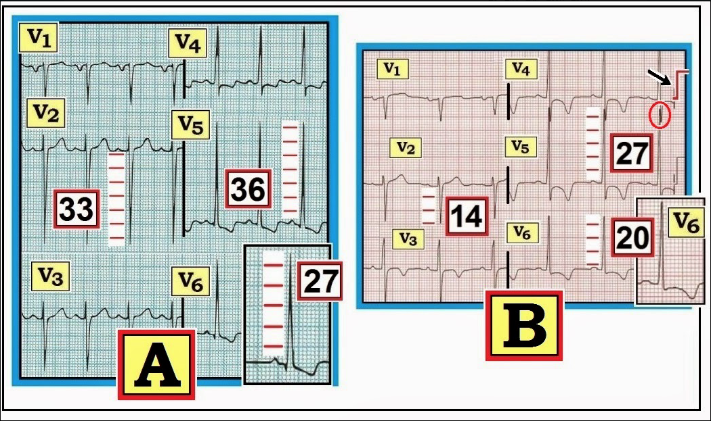
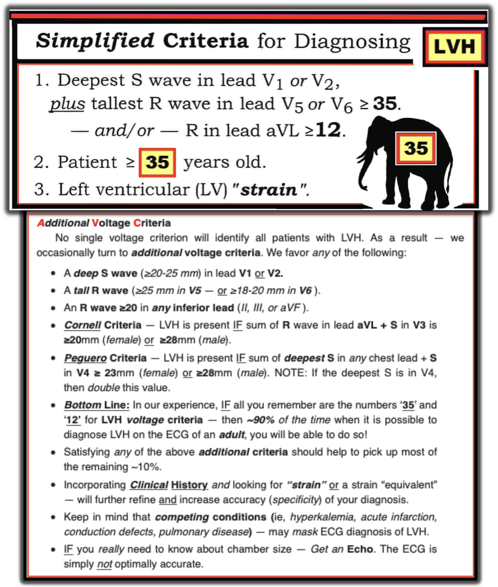

ECG Blog #73 — LVH — Tiêu chuẩn điện thế ...
===========================
LƯU Ý: Tôi đã thêm một Thẻ LVH vào MENU phía trên (ở đầu mọi trang của ECG Blog này) — để giúp dễ tìm Tiêu chuẩn LVH (Xem Bảng tiêu chuẩn LVH trong Phần bổ sung ở cuối trang này — và ngay phía trên đó là các liên kết tới LAA/RAA & RVH).
===========================
Điện tâm đồ 12 chuyển đạo trình bày dưới đây ở Hình 1 được ghi ở một nam giới 29 tuổi khỏe mạnh đến “khám sức khỏe mua bảo hiểm”.
- Hãy đọc điện tâm đồ 12 chuyển đạo này.
- Có điện thế đủ cho LVH không?
- Tiêu chuẩn điện thế cho LVH có được thỏa mãn NẾU bệnh nhân này 40 tuổi không?
- Khi tiêu chuẩn điện thế cho LVH được thỏa mãn — dấu hiệu điện tâm đồ nào dự báo tốt nhất khả năng có dày/lớn buồng tim thật sự?


------------------------------------------
Diễn giải Hình 1:
Có loạn nhịp xoang với tần số dao động trong khoảng 65-75 lần/phút. Các khoảng (PR/QRS/QT) bình thường — và trục QRS trung bình bình thường (+50 độ).
- Tiêu chuẩn điện thế cho LVH có được thỏa mãn trên bản ghi này hay không tùy thuộc vào tuổi của bệnh nhân.
- Thay đổi QRST: Thấy một sóng q nhỏ ở chuyển đạo I và V6. Tăng tiến sóng R bình thường (với vùng chuyển tiếp giữa V2 và V3). Ngoài sóng ST-T dẹt tối thiểu ở chuyển đạo III, aVF — sóng ST-T không có gì đáng chú ý. Không có thay đổi cấp tính.
Tiêu chuẩn điện thế cho LVH: Dùng tiêu chuẩn nào?
Điện tâm đồ ở Hình 1 là một ví dụ rất tốt để minh họa hai khái niệm quan trọng:
- i) Có rất nhiều tiêu chuẩn để đánh giá LVH; và,
- ii) Một số tiêu chuẩn trong đó phụ thuộc tuổi.
Chưa có sự thống nhất chung về cách đánh giá LVH trên điện tâm đồ. Làm sao có thể thống nhất được? — khi đã có hơn 50 bộ tiêu chuẩn LVH được công bố trong y văn. Trên thực tế — không bộ nào trong hơn 50 bộ tiêu chuẩn này chính xác một cách tối ưu. Tất cả đều có độ nhạy không hoàn hảo, không vượt quá 55% ngay cả với những người đọc điện tâm đồ giỏi nhất. Điều này có nghĩa là có tới một nửa số trường hợp khi có dày thành LV (thất trái – Left Ventricular) hoặc lớn buồng LV vượt quá giới hạn bình thường ở người lớn — sẽ không phát hiện được qua đánh giá điện tâm đồ. ĐIỀU CỐT LÕI: NẾU về mặt lâm sàng bạn thật sự cần biết có lớn buồng tim hay không — thì hãy làm siêu âm tim (Echo).
- Mặc dù điện tâm đồ có độ nhạy kém trong phát hiện lớn buồng tim thật sự — độ đặc hiệu của điện tâm đồ có thể rất tốt (tức là >90%) — NẾU ngoài điện thế đủ cho LVH, bệnh nhân còn biểu hiện bất thường sóng ST-T phù hợp với “tăng gánh” thất trái (LV strain) (Xem bên dưới).
Dùng tiêu chuẩn nào trong số 50 bộ tiêu chuẩn LVH?
Phải thừa nhận rằng câu trả lời của chúng tôi về tiêu chuẩn LVH nào là tốt nhất phản ánh thiên kiến riêng, dựa trên nhiều năm kinh nghiệm nhằm tối ưu hóa độ nhạy/độ đặc hiệu trong đánh giá điện tâm đồ. Chúng tôi cho rằng tiêu chuẩn LVH có thể được đơn giản hóa rất nhiều chỉ bằng cách nhớ hai con số = “35” và “12”. Dùng 2 con số này sẽ dễ dàng nhận ra tới 90% bệnh nhân LVH trong những trường hợp có thể phát hiện LVH trên điện tâm đồ 12 chuyển đạo (Hình 2):


Về Hình 2:
- Chỉ cần thỏa mãn một tiêu chuẩn điện thế (tức là 35 hoặc 12 ) — là đủ để chẩn đoán LVH trên điện tâm đồ.
- Tiêu chuẩn R ở aVL ≥12mm có lẽ hữu ích nhất khi có trục lệch trái (Dùng tiêu chuẩn sóng R ≥12 ở aVL có thể chẩn đoán được LVH dù điện thế ở V1,V2 và V5,V6 chỉ tăng tối thiểu).
- Lưu ý rằng tiêu chuẩn điện thế cho LVH có thể không có giá trị ở bệnh nhân trẻ tuổi. Lý do là người lớn trẻ (ở độ tuổi 20) thường có biên độ QRS tăng mà không có lớn buồng tim thật sự. Chúng tôi khuyên không dùng các tiêu chuẩn này cho bệnh nhân dưới 35 tuổi.
- Độ chính xác (độ đặc hiệu) của chẩn đoán LVH trên điện tâm đồ có thể tăng lên rất nhiều — NẾU ngoài việc thỏa mãn một hoặc nhiều tiêu chuẩn điện thế, còn có thay đổi sóng ST-T kiểu "tăng gánh thất trái" (Xem Hình 3 bên dưới).
- Bệnh sử lâm sàng giúp đánh giá LVH. Nên biết rằng ngay cả trước khi nhìn vào điện tâm đồ — khả năng có lớn buồng tim thật sự đã tăng rất nhiều NẾU bản ghi là của một nam giới trung niên người Mỹ gốc Phi bị tăng huyết áp lâu năm. Tiền sử bệnh tim nền (suy tim, tăng huyết áp, bệnh cơ tim, bệnh van tim, bệnh động mạch vành) rõ ràng làm tăng khả năng có LVH ở bất kỳ bệnh nhân nào. Ngược lại, bệnh sử trong case này là một nam giới 29 tuổi khỏe mạnh, không triệu chứng — khiến khả năng lớn buồng LV thật sự thấp hơn nhiều.
Các tiêu chuẩn điện thế bổ sung:
Không có tiêu chuẩn điện thế đơn lẻ nào nhận ra được mọi bệnh nhân LVH. Vì vậy — đôi khi chúng tôi dùng đến các tiêu chuẩn điện thế bổ sung. Chúng tôi ưa dùng bất kỳ tiêu chuẩn nào sau đây:
- Sóng S sâu (≥20-25 mm) ở chuyển đạo V1 hoặc V2.
- Sóng R cao (≥25 mm ở V5 — hoặc ≥18-20 mm ở V6 ).
- Sóng R ≥20 ở bất kỳ chuyển đạo dưới nào (II, III, hoặc aVF ).
- Tiêu chuẩn Cornell — có LVH NẾU tổng sóng R ở chuyển đạo aVL + S ở V3 là ≥20mm (nữ) hoặc ≥28mm (nam).
- Tiêu chuẩn Peguero — có LVH NẾU tổng sóng S sâu nhất ở bất kỳ chuyển đạo ngực nào + S ở V4 ≥ 23mm (nữ) hoặc ≥28mm (nam). LƯU Ý: Nếu sóng S sâu nhất nằm ở V4, thì nhân đôi giá trị này.
- Điều cốt lõi: Theo kinh nghiệm của chúng tôi, NẾU tất cả những gì bạn nhớ chỉ là hai con số ‘35’ và ‘12’ cho tiêu chuẩn điện thế LVH — thì trong ~90% số trường hợp có thể chẩn đoán được LVH trên điện tâm đồ của một người lớn, bạn sẽ chẩn đoán được!
- Thỏa mãn bất kỳ tiêu chuẩn bổ sung nào ở trên sẽ giúp phát hiện phần lớn ~10% còn lại.
- Kết hợp Bệnh sử lâm sàng và tìm dấu “tăng gánh” hoặc dấu “tương đương” tăng gánh — sẽ giúp tinh chỉnh thêm và tăng độ chính xác (độ đặc hiệu) cho chẩn đoán của bạn.
- Cần nhớ rằng các tình trạng cạnh tranh (tức là tăng kali máu, nhồi máu cấp, rối loạn dẫn truyền, bệnh phổi) — có thể che lấp chẩn đoán LVH trên điện tâm đồ.
- NẾU bạn thật sự cần biết kích thước buồng tim — Hãy làm siêu âm tim. Điện tâm đồ đơn giản là không chính xác một cách tối ưu.
“Tăng gánh” thất trái (LV strain) — Nhận biết/Ứng dụng trong chẩn đoán LVH
Thật khó định nghĩa “tăng gánh”. Chúng tôi mô tả nó là — một hình ảnh ST-T chênh xuống không đối xứng (Ô C ở Hình 3). Có lẽ “tăng gánh” đơn giản phản ánh thời điểm mà ở đó thất lớn về mặt giải phẫu tới mức nhu cầu tăng lên (do buồng tim dày lên) vượt quá khả năng cung cấp máu — dẫn đến thay đổi tái cực sóng ST‑T do tưới máu không tối ưu. Hoặc có lẽ không phải thế … Dù vậy — Điều có ý nghĩa lâm sàng là nhận ra trên điện tâm đồ một hình ảnh “tăng gánh”.
- Hãy lưu ý đoạn dốc xuống của đoạn ST chậm hơn như thế nào khi có “tăng gánh” (mũi tên ở Ô C của Hình 3) — so với sự trở về đường nền nhanh hơn của đoạn ST. Có thể có hoặc không kèm theo điểm J chênh xuống trong "tăng gánh" thất trái (Không thể hiện ở Ô C).


“Tăng gánh” thất trái thường gặp nhất ở một (hoặc nhiều) chuyển đạo nhìn vào thất trái.
- Bao gồm các chuyển đạo bên I,aVL; V4,V5,V6.
- Ít gặp hơn — “tăng gánh” thất trái có thể thấy ở các chuyển đạo dưới (đặc biệt nếu bệnh nhân có trục hướng xuống dưới).
- “Tăng gánh” thất trái — thường không thấy ở các chuyển đạo trước (V1,V2,V3). Ngược lại, “tăng gánh” thất phải (RV strain) (có thể gặp trong RVH hoặc thuyên tắc phổi cấp) — điển hình lại thấy ở hoặc các chuyển đạo trước hoặc các chuyển đạo dưới.
------------------------------------------
- LƯU Ý (Khái niệm nâng cao): Đôi khi, bạn có thể thấy "tăng gánh" thất trái ở các chuyển đạo trước có sóng S sâu, biểu hiện dưới dạng hình ảnh soi gương — trong đó thay vì sóng ST-T chênh xuống, một hoặc nhiều chuyển đạo trước có thể có ST chênh lên với hình ảnh gương của dạng sóng ST-T thường thấy trong "tăng gánh" thất trái ở các chuyển đạo bên. (Để xem một ví dụ — mời xem My Comment ở cuối bài đăng ngày December 27, 2018 trên Dr. Smith's ECG Blog.)
------------------------------------------
Khái niệm nhận dạng hình ảnh là thiết yếu trong chẩn đoán điện tâm đồ. Hãy xem xét những điều sau:
- Với thiếu máu cục bộ (thấy ở Ô D của Hình 3) — thường sẽ có sóng T đảo ngược đối xứng ở hai hoặc nhiều chuyển đạo trong cùng một vùng chuyển đạo.
- Khi lần theo con đường từ một sóng ST-T bình thường (Ô A ở Hình 3) — tới sóng ST-T không đối xứng điển hình của “tăng gánh” thất trái (thấy ở Ô C) — ta đi qua một giai đoạn trung gian, khi sóng ST-T dẹt xuống cùng với ST bắt đầu chênh xuống (Ô B). Chúng tôi gọi giai đoạn trung gian này là tương đương tăng gánh”.
Lý do cần nhận ra “tăng gánh” — là vì dấu hiệu này làm tăng rất nhiều độ chính xác của chẩn đoán LVH trên điện tâm đồ.
- Có tăng điện thế mà không có “tăng gánh” — thì độ đặc hiệu thấp (<50%) cho lớn buồng tim thật sự (đặc biệt nếu không có bệnh tim nền). Chúng tôi diễn giải dấu hiệu điện thế tăng mà không có thay đổi sóng ST-T kiểu “tăng gánh là “Điện thế đủ cho LVH”. Cách gọi này nhằm thừa nhận rằng dù có điện thế — xác suất thống kê có lớn buồng tim thật sự vẫn thấp.
- Ý nghĩa lâm sàng của điện thế LVH kèm một “tương đương tăng gánh” (tức là sóng ST-T dẹt không đặc hiệu, như thấy ở Ô B của Hình 3) — cũng giống như với “tăng gánh” (tăng rất nhiều độ đặc hiệu cho LVH — và tăng tới 8 lần bệnh suất/tử suất, như đã được chứng minh ở bệnh nhân tăng huyết áp lâu năm trong nghiên cứu Framingham).
------------------------------------------
- LƯU Ý (Khái niệm nâng cao): Đôi khi, bạn có thể thấy ở một hoặc nhiều chuyển đạo bên trái một hình ảnh sóng ST-T trông rất giống "tăng gánh" thất trái, nhưng không đạt tiêu chuẩn điện thế LVH trên điện tâm đồ. Do độ nhạy chung của điện tâm đồ trong phát hiện LVH kém (tức là ≤55%, như đã nêu ở trên) — NẾU bệnh nhân này gần như đạt tiêu chuẩn điện thế — và — có bệnh sử lâm sàng dễ dẫn tới LVH (tức là suy tim, tăng huyết áp lâu năm) — thì khả năng có lớn buồng tim thật sự trên siêu âm tim vẫn cao hơn là không. Trong những trường hợp như vậy — tôi thường ghi "Có thể có LVH" trong phần diễn giải điện tâm đồ. Rõ ràng, đọc điện tâm đồ là một "nghệ thuật" — và điện tâm đồ còn xa mới hoàn hảo như một công cụ chẩn đoán.
- ĐIỂM THEN CHỐT (PEARL): Đôi khi — dấu hiệu "tăng gánh" thất trái hoặc thay đổi sóng ST-T trông giống thiếu máu cục bộ — cái này có thể che lấp cái kia! Khi điều đó xảy ra — có thể khó (nếu không nói là không thể) phân biệt giữa LVH rõ rệt (tức là do tăng huyết áp lâu năm và/hoặc bệnh cơ tim) — với LVH ở một bệnh nhân đồng thời có thiếu máu cục bộ cấp/nhồi máu đang diễn tiến. Trong những trường hợp như vậy — tôi thường ghi "LVH và 'tăng gánh' và/hoặc thiếu máu cục bộ. Đề nghị đối chiếu lâm sàng!" Thường sẽ cần thêm thông tin (tức là các bản ghi nối tiếp, troponin, siêu âm tim khẩn, v.v.) để xác định XEM có quá trình cấp tính nào đang diễn ra không.
------------------------------------------
QUAY LẠI với CASE này:
Bệnh nhân trong case này là một nam giới 29 tuổi khỏe mạnh, không triệu chứng, đến “khám sức khỏe mua bảo hiểm”. Ở Hình 4 — Chúng tôi phóng to các chuyển đạo trước tim V1,V2 và V5,V6 từ Hình 1 để minh họa cách chúng tôi đánh giá xem có đạt tiêu chuẩn điện thế cho LVH hay không. Trong case này chúng tôi tập trung vào các chuyển đạo trước tim — vì chuyển đạo aVL ở Hình 1 rõ ràng thấp hơn biên độ 12mm cần thiết.


Về Hình 4:
- Sóng S sâu nhất ở V1,V2 là ở V1 (20) + sóng R cao nhất ở V5, V6 (= 23 ở V5) là >35 — vì vậy tiêu chuẩn điện thế cho LVH sẽ được thỏa mãn NẾU bệnh nhân trên 35 tuổi (Hình 2). Nhưng vì bệnh nhân dưới 35 tuổi — nên không có điện thế đủ cho LVH.
- Bất kể bệnh nhân trong case này 29 hay 40 tuổi — không có dấu hiệu “tăng gánh” ở bất kỳ chuyển đạo bên nào trong Hình 1. Do đó, ngay cả NẾU bệnh nhân trên 35 tuổi — lớn buồng LV thật sự vẫn khó có khả năng ở người không triệu chứng này khi không có dấu hiệu “tăng gánh” hay “tương đương tăng gánh” trên điện tâm đồ.
“Tăng gánh” thất trái — Ảnh hưởng của nó lên độ đặc hiệu trong chẩn đoán LVH
Một khi có cả “tăng gánh” và điện thế cho LVH — độ đặc hiệu cho LVH tăng lên đáng kể (lên tới ~90% — và >95% nếu bệnh nhân có bệnh tim nền). Điều này thấy được ở các chuyển đạo trước tim trình bày ở Hình 5:


Điểm nâng cao: “Tăng gánh” thất trái? — Thiếu máu cục bộ? — hay cả hai?
Như đã đề cập ở trên — Thường có sự lẫn lộn về việc các thay đổi sóng ST-T đi kèm ở bệnh nhân có biên độ QRS tăng là biểu hiện của thiếu máu cục bộ hay “tăng gánh” — hay cả hai? Cách tốt nhất để tìm hiểu khái niệm này là so sánh song song một ví dụ lâm sàng (Hình 6):
- Ở cả Ô A và Ô B của Hình 6 — sóng S sâu nhất ở V1,V2 + sóng R cao nhất ở V5,V6 dễ dàng thỏa mãn tiêu chuẩn điện thế cho LVH.
- Ở Ô A — hình dạng sóng ST-T ở chuyển đạo V5,V6 gợi ý mạnh “tăng gánh” thất trái (có ST chênh xuống không đối xứng với đoạn dốc xuống võng chậm). Dù không thể loại trừ khả năng thiếu máu cục bộ (dù sao cũng có một chút điểm J chênh xuống — đặc biệt ở chuyển đạo V4) — khi không có tiền sử đau ngực, chúng tôi nghĩ các thay đổi ở Ô A chủ yếu là LVH kèm “tăng gánh”.
- Ngược lại, ở Ô B — đoạn ST có dạng vòm từ V3 đến V6. Ngoài ra, có điểm J chênh xuống 1-2 mm (dưới đường nền đoạn PR) ở chuyển đạo V4,V5,V6 — kèm sóng T đảo ngược sâu và trông đối xứng hơn nhiều (đặc biệt ở chuyển đạo V4,V5). Hình ảnh này gợi ý nhiều hơn tới thiếu máu cục bộ.
- Đặc biệt — chuyển đạo V3 ở Ô B trông thiếu máu cục bộ (“tăng gánh” thất trái đơn thuần hầu như không bao giờ tạo ra ST dạng vòm và T đảo ngược đối xứng ở vị trí trước như vậy).
- Chuyển đạo V6 ở Ô B — có hình ảnh trung gian giữa “tăng gánh” và/hoặc thiếu máu cục bộ. Vì bệnh nhân này “lớn tuổi” và có tiền sử bệnh tim và rõ ràng đạt tiêu chuẩn điện thế cho LVH — Chúng tôi sẽ diễn giải điện tâm đồ này là phù hợp với (nếu không nói là gợi ý mạnh “LVH và “tăng gánh” và/hoặc thiếu máu cục bộ.” Cần đối chiếu lâm sàng và so sánh với các bản ghi trước để xác định XEM có quá trình thiếu máu cục bộ cấp nào có thể đang diễn ra không.


-------------------------------------
- Để biết thêm thông tin – TRUY CẬP:
.
- Xem thêm ECG Blog #75 - để ôn lại Lớn / Bất thường nhĩ -
- Xem ECG Blog #77 - để ôn lại tiêu chuẩn RVH -
- Xem thêm ECG Blog #92 ( = Basic Concepts #5) — cho một cách tiếp cận khác với LVH.
-------------------------------------
PHẦN BỔ SUNG (2019): Để tổng hợp các tiêu chuẩn LVH mà tôi ưa dùng — tôi bổ sung Hình 7:

